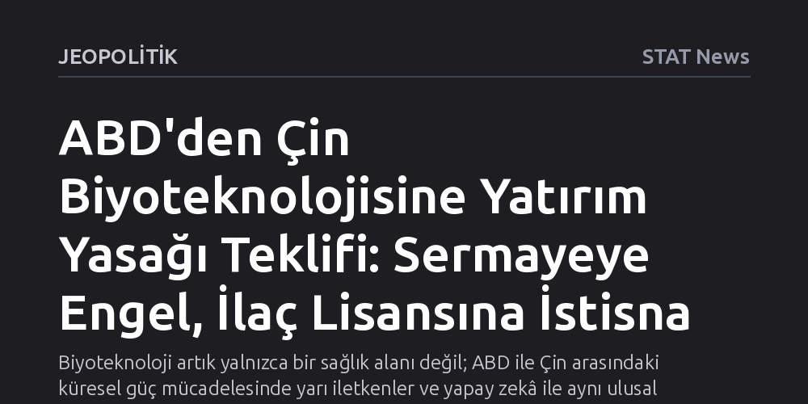

JEOPOLITIK · STAT News · 2026-10-24
ABD Hazine Bakanlığı, ulusal güvenlik gerekçesiyle Çin biyoteknoloji sektörüne yönelik Amerikan yatırımlarını yasaklayan yeni bir kural teklif etti. Düzenleme sermaye akışını ve finansal işlemleri engellerken, Amerikan ilaç üreticilerinin Çin'de geliştirilen ilaçların lisans haklarını satın almasına izin veriyor.
Biyoteknoloji artık yalnızca bir sağlık alanı değil; ABD ile Çin arasındaki küresel güç mücadelesinde yarı iletkenler ve yapay zekâ ile aynı ulusal güvenlik kategorisinde değerlendirilen stratejik bir cephedir.

ABD Hazine Bakanlığı, Çin'in biyoteknoloji sektörüne yönelik Amerikan yatırımlarını kapsamlı biçimde kısıtlamayı öngören yeni bir kural teklifini kamuoyuna sundu. Trump yönetiminin hazırladığı bu tasarı, doğrudan ulusal güvenliği ilgilendiren stratejik alanlara Amerikan sermayesinin akmasını engellemeyi hedefleyen Kapsamlı Dışa Yönelik Yatırım Ulusal Güvenlik Yasası'na (COINS) dayanıyor.
Teklifin en dikkat çekici boyutu, biyoteknolojinin resmen ulusal güvenlik tehdidi oluşturan alanlar listesine eklenmesidir. Böylelikle biyoteknoloji sektörü; ABD ile Çin arasındaki teknolojik ve stratejik rekabette yarı iletkenler, yapay zekâ ve kuantum bilişim gibi en kritik alanlarla aynı yasal kısıtlama çerçevesine dahil edilmiş oldu.
Yeni kural teklifinin çalışma mekanizması sermaye transferi ile ilaç tedariki arasında net bir çizgi çekiyor. Araştırma şirketi Veda'nın paylaştığı analizlere göre düzenleme; Amerikan şirketlerinin Çinli biyoteknoloji girişimleriyle ya da biyoteknoloji ekipmanı ve araçları üreten imalatçılarla finansal işlemlere girmesini, ortaklık kurmasını veya hisse yatırımı yapmasını kesin olarak yasaklıyor.
Buna karşılık kuralda Amerikan ilaç sektörü için hayati bir istisnaya yer verildi: Amerikan ilaç üreticileri, Çin'de keşfedilmiş ve geliştirilmiş moleküllerin veya tedavilerin lisans haklarını satın almaya devam edebilecek. Washington yönetimi bu hamleyle Çin'in biyoteknoloji ekosistemine Amerikan sermayesi ve teknolojisi aktarılmasını önlerken, Amerikan pazarının Çin'de üretilen yenilikçi ilaçlardan mahrum kalmasının önüne geçmeyi amaçlıyor.
Bu hamle, son yıllarda sınır ötesi yatırımlarla iç içe geçen küresel ilaç ve biyoteknoloji endüstrisinde taşları yerinden oynatacak nitelikte. Çin'in yenilikçi ilaç geliştirme hızının artması, Batılı şirketlerin bu ekosisteme erken aşamada yatırım yapmasını hızlandırmıştı. Yeni kısıtlamalar doğrudan şirket yatırımlarını dondurarak iki ülke arasındaki iş birliğini yalnızca lisanslama anlaşmaları zeminine sıkıştıracak.
Teklif henüz nihai aşamaya gelmemiş olsa ve müzakerelerle değişikliğe uğrama ihtimali bulunsa da biyoteknolojinin uluslararası siyasetteki konumunun değiştiğini tescilliyor. Yaşam bilimleri artık sadece küresel sağlık ve ticari kârlılık meselesi olarak değil; süper güçler arası teknoloji savaşının ve veri güvenliğinin stratejik bir cephesi olarak yönetiliyor.